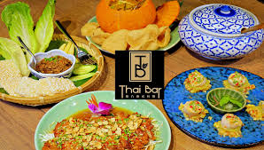

泰國飲食

泰國菜
泛指泰國民族的飲食文化。泰國菜以酸、辣、鹹、甜、苦五味的平衡為特點。
泰國菜有五大菜系，分別為泰國中原菜、首都菜、泰國南部菜、
蘭納菜與依善菜，反映泰國五方不同的地理和文化，而各地使用的食材往往跟鄰近國家的一樣。
例如泰南菜，和馬來菜一樣多用椰奶、鮮黃薑，而泰東北菜則與寮國菜一樣善用青檸汁。此外，
泰國現有的菜式，不少受到多年定居泰國的華裔影響，其中潮州菜的影響最為顯著，例如粥，貴刁（粿條），
和海南雞飯等。
泰國菜多使用魚露和新鮮的香料，少用乾材。
第2頁
第3頁
第4頁
第5頁